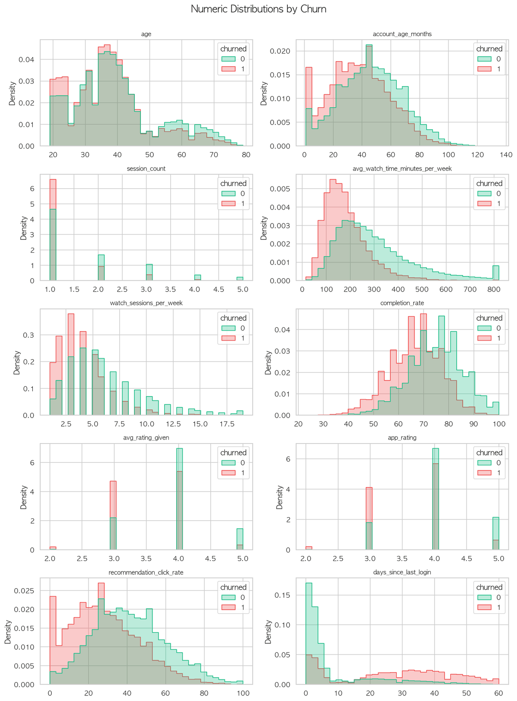
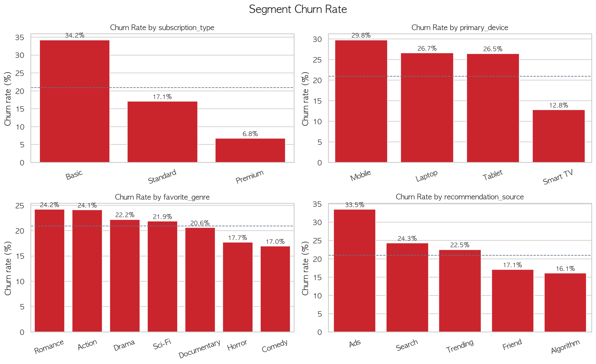

탐색적 데이터 분석 (EDA)
50,000명의 Netflix 사용자 행동 데이터에서 이탈 패턴을 탐색합니다
1데이터셋 개요
결측치 없는 깨끗한 데이터 50,000건, 20개 컬럼
2타겟 분포
이탈 클래스 비율 약 21%로, 극단적 불균형은 아니지만 accuracy 중심 평가는 부적절
3이탈과의 상관관계
수치형 변수와 churned 간의 Pearson 상관계수
핵심 인사이트: days_since_last_login이 상관계수 0.498로 가장 강한 양의 상관을 보입니다. 로그인 공백이 길수록 이탈 확률이 급격히 높아집니다. 반대로 시청량, 완료율, 추천 클릭률이 높을수록 이탈 확률이 낮아집니다.
4범주형 변수별 이탈률
이탈률 차이가 큰 변수를 중심으로 확인
구독 요금제 (subscription_type)
요금제별 이탈률 차이가 가장 극명함
주 사용 기기 (primary_device)
유입 경로 (recommendation_source)
수치형 변수 분포 비교 (churned=0 vs 1)

유지 고객(0)과 이탈 고객(1)의 수치형 변수 분포 — 분포가 갈라지는 변수가 핵심 이탈 신호
5이탈 여부별 수치형 피처 비교
유지 고객(0) vs 이탈 고객(1) 평균값 비교
| 피처 | 유지 고객 (평균) | 이탈 고객 (평균) | 차이 | 해석 |
|---|---|---|---|---|
| days_since_last_login | 8.3일 | 27.2일 | +18.9일 | 핵심 신호 |
| avg_watch_time (min/week) | 303.6분 | 181.3분 | -122.3분 | 핵심 신호 |
| recommendation_click_rate | 41.4% | 28.4% | -13.0%p | 주요 신호 |
| completion_rate | 74.9% | 66.6% | -8.3%p | 주요 신호 |
| watch_sessions_per_week | 6.2회 | 4.0회 | -2.2회 | 주요 신호 |
| app_rating | 4.03점 | 3.63점 | -0.40점 | 보조 신호 |
| account_age_months | 46.5개월 | 38.3개월 | -8.2개월 | 보조 신호 |
6세그먼트별 이탈률
로그인 공백, 활동 수준, 만족도 기준으로 고객군 분리
로그인 공백 세그먼트
활동 수준 세그먼트
만족도 세그먼트
세그먼트별 이탈률 비교

요금제, 기기, 유입 경로 등 주요 범주형 변수별 이탈률 비교
교차 세그먼트 인사이트: 로그인 공백 31일 이상 + 저활동 고객은 이탈률이 가장 높은 조합입니다. 반대로 0-3일 이내 로그인 + 고활동 고객은 거의 이탈하지 않는 핵심 유지 고객군입니다.
7EDA 핵심 결론
최근 로그인 공백이 이탈의 가장 강한 신호 (상관계수 0.498). 31일 이상 미접속 시 이탈률 59.8%.
Basic 요금제(34.4%), Mobile 기기(30.0%), Ads 유입(33.7%) 고객군이 고위험.
시청량, 완료율, 추천 클릭률, 앱 평가가 낮을수록 이탈 위험 증가.
Premium + Smart TV + Algorithm 유입 고객은 가장 안정적인 유지 고객군.
gender, region은 이탈률 차이가 작아 모델링에서 제외 검토.